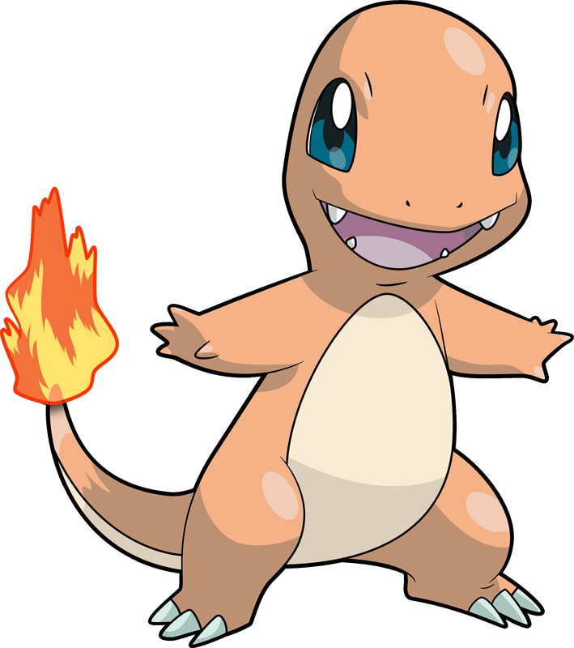

| Home | Introduction | Dictionary | Video | Map |
|  | |
| Type | Ability |
| Fire | Blaze |
| Height | Weight |
| 2'00" | 18.7 lbs |
Charmander is a bipedal, reptilian Pokémon with a primarily orange body. Its underside from the chest down and soles are cream-colored. It has two small fangs visible in its upper jaw and two smaller fangs in its lower jaw. Charmander has blue eyes. Its arms and legs are short with four fingers and three clawed toes. A fire burns at the tip of this Pokémon's slender tail, and has blazed there since Charmander's birth. The flame can be used as an indication of Charmander's health and mood, burning brightly when the Pokémon is strong, weakly when it is exhausted, wavering when it is happy, and blazing when it is enraged. It is said that Charmander dies if its flame goes out. However, if the Pokémon is healthy, the flame will continue to burn if gets a bit wet and is said to steam in the rain.
Charmander can be found in hot, mountainous areas. However, it is found far more often in the ownership of Trainers. As shown in Pokémon Snap, Charmander exhibits pack behavior, calling others of its species if it finds food.